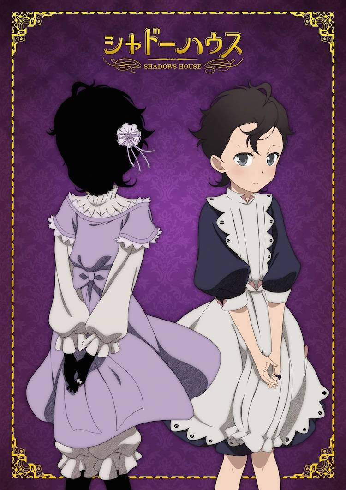
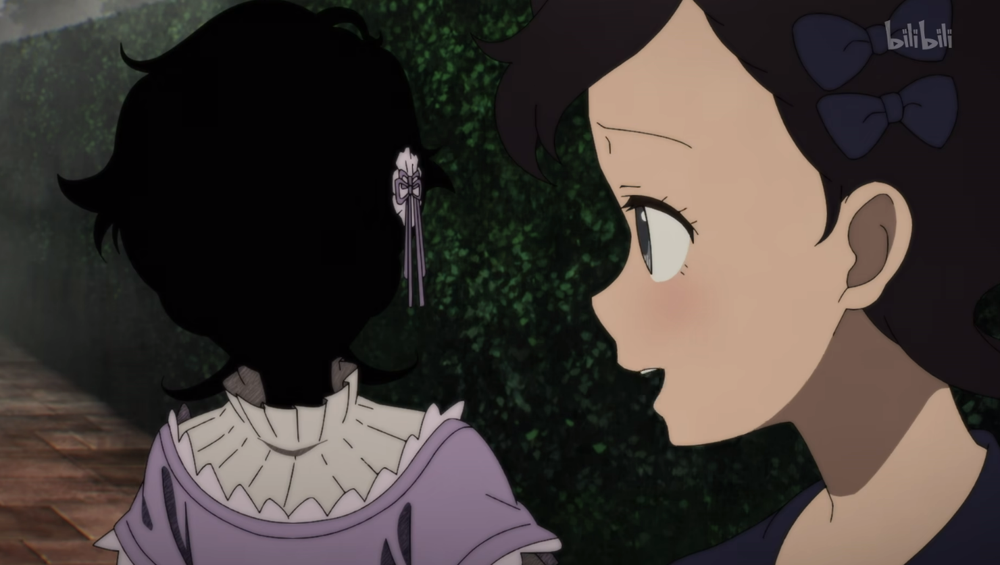
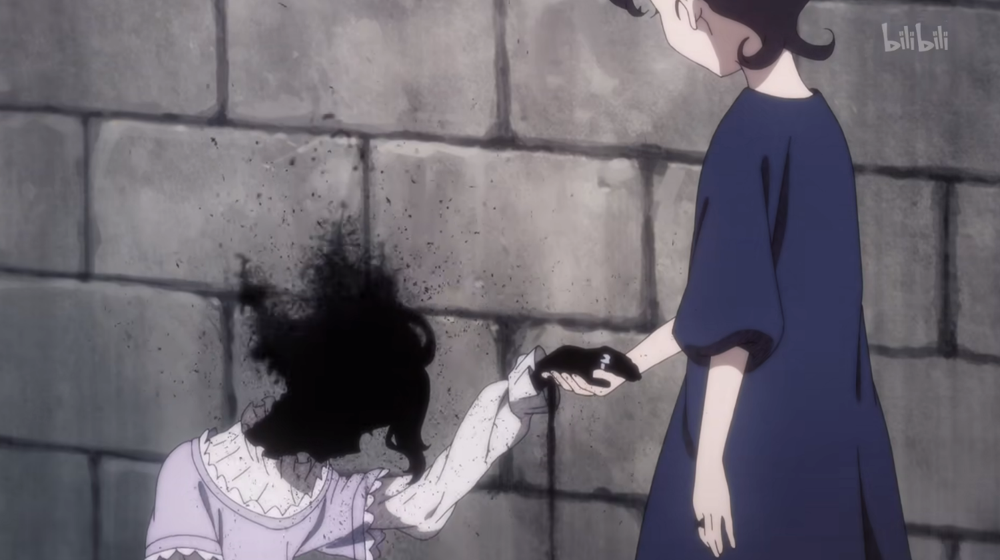
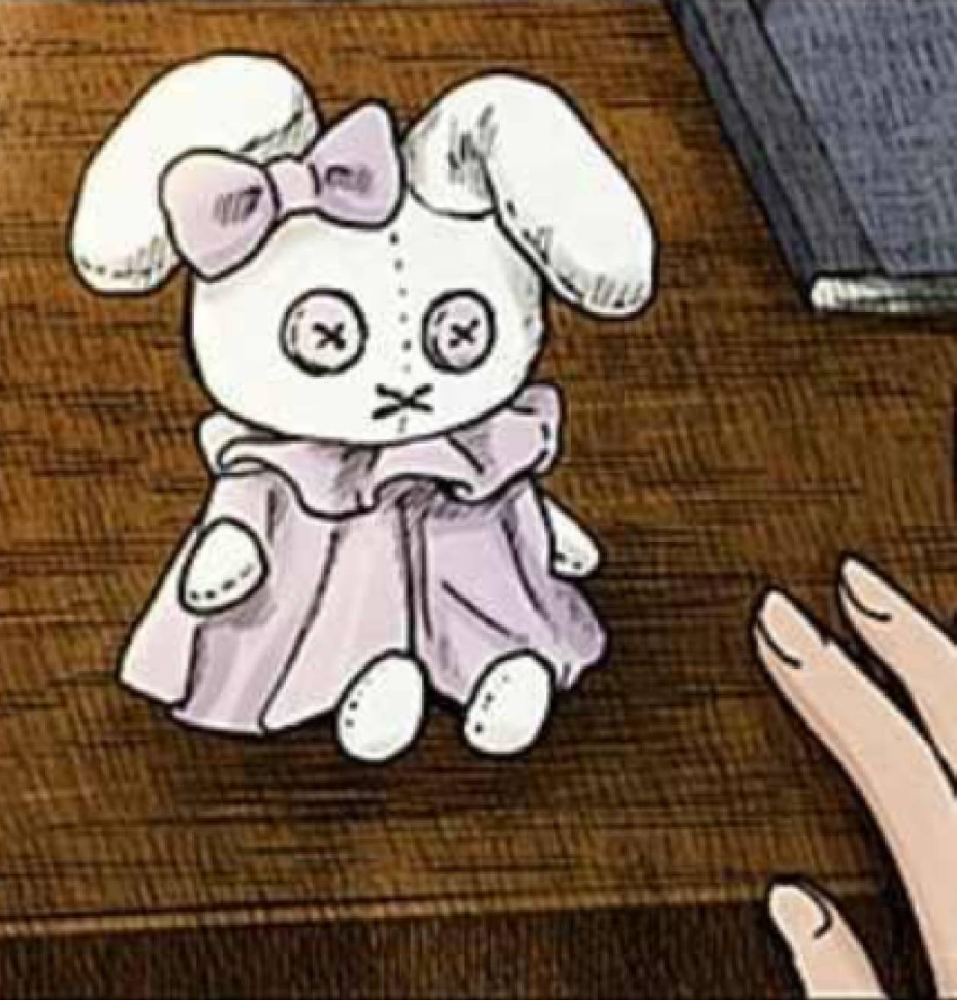
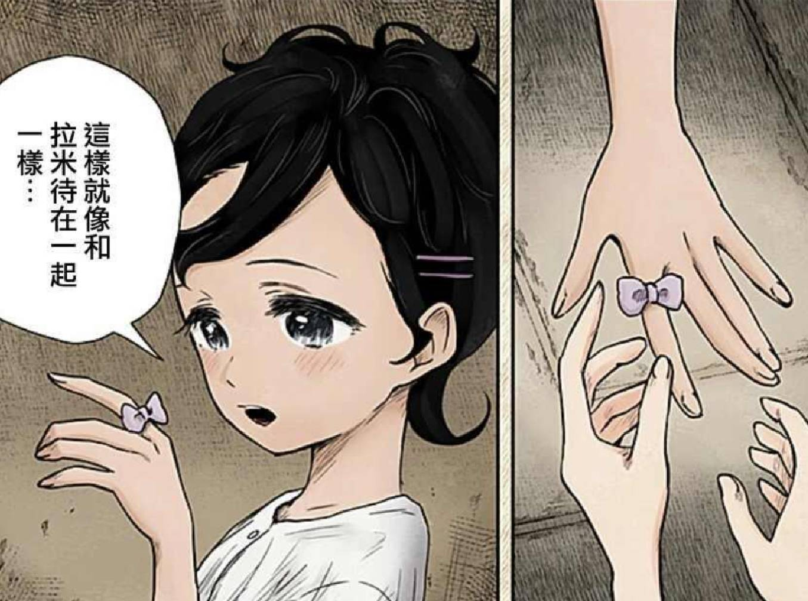

夏麗與拉姆

夏麗（シャーリー，聲：下地紫野）
影家人，拉姆的主人，穿著紫色連身裙。無法產生人格，個性上幾乎無法對外界做出有意義的反應，事實上也與自己的活人偶拉姆沒有任何交流。
同期中唯一在正式露面失敗的一組而消散，但實際上回歸妖精最初的模樣，並且得到人格和覺醒黑灰能力，雖然無法說話但個性相當活潑。現在只能在拉姆的食指上進行心靈交流。
黑灰量少，黑灰能力為變身。
拉姆（ラム，聲：下地紫野）
活人偶，夏麗的女僕。有著黑色短髮，個性害羞，做事有著細心的一面，記憶力超群，缺點是極度悲觀以至於事事都做不好。因自己幾乎無法與主人交流，也並未從主人那裡得到名字，而是自行取名為「拉姆」，同時經常和食指上的蝴蝶結「拉米」自說自話。


人類時期的名字是夏麗，影宅的領地「鏡邊村」出身，和尚恩、利奇、露是同學。實際年紀為11歲。
若是沒把母親的玩偶「拉米」帶在身邊就無法正常溝通，因此當時艾蜜莉可便教她在食指上綁蝴蝶結並取名為「拉米」使其能夠正常溝通。
同期中唯一在正式露面失敗的一組而淪為無面人偶，但因夏麗的協助得以擺脫洗腦。目前已和凱特一行人聯絡並告知現狀，並和夏麗一起為凱特蒐集情報，由夏麗蒐集情報，拉姆用紙筆寫下訊息，趁著拉姆巡邏時由夏麗將情報交給凱特。

